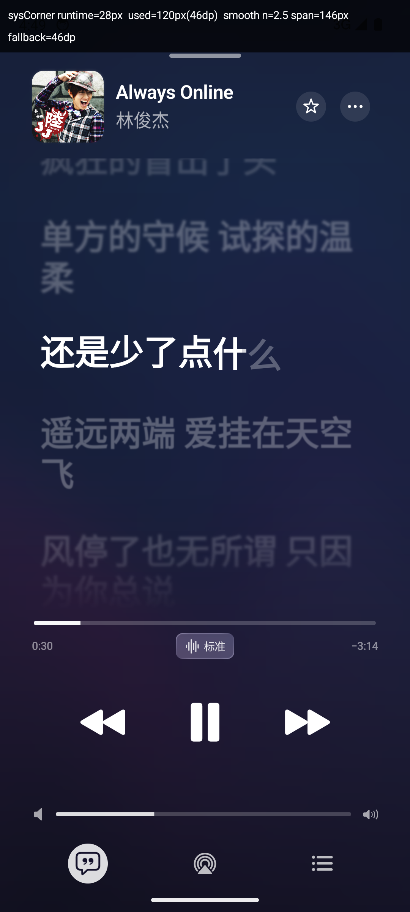
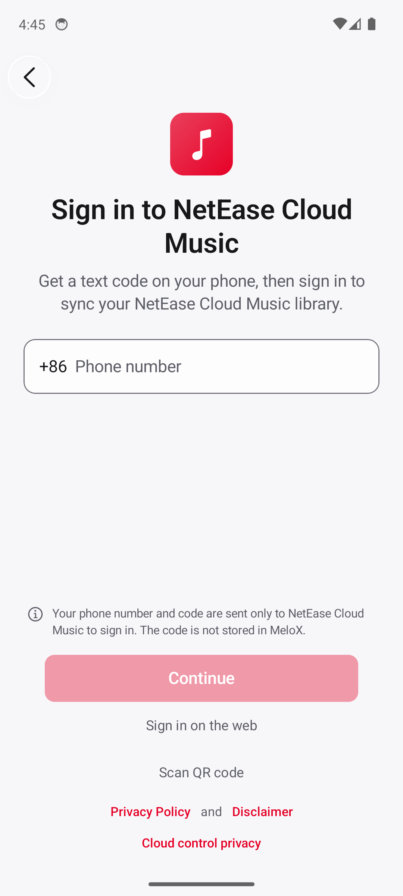

可靠的后台播放
基于 Media3 / ExoPlayer，支持队列、后台音频、暂停续播与播放状态同步。
MELOX ANDROID · RELEASE 0.6.5
一款真正原生的音乐客户端。用 Kotlin、Jetpack Compose 与 AndroidX Media3， 把播放、歌词、通知、锁屏和音乐库收进同一条流畅的体验链路。

THE EXPERIENCE
从发现一首歌到按下锁屏上的下一首，MeloX 把重要的细节留在手边。

不是把网页装进手机，而是把音乐体验重新做成 Android 应用。
MELOX ANDROIDBUILT FOR LISTENING
能力不堆在设置页里。播放、歌词、音乐库和系统控制彼此相连，才会让一款音乐应用真正顺手。
基于 Media3 / ExoPlayer，支持队列、后台音频、暂停续播与播放状态同步。
支持 LRC / YRC、翻译、罗马音、逐字进度，以及独立歌词与系统媒体信息。
以网易云音乐为核心，保留歌曲、歌单、收藏、评论与音乐库的连续体验。
通知、锁屏、控制中心、系统媒体会话与设备厂商增强能力，都从播放状态出发。
READY WHEN YOU ARE
下载最新 Release，安装后即可体验 MeloX Android。项目保持开放，源码、更新记录与问题反馈都在 GitHub。
EE34B59806BBAD75F957396BE02B3319DE52D2E4AE5688441BC497AA29CD737B